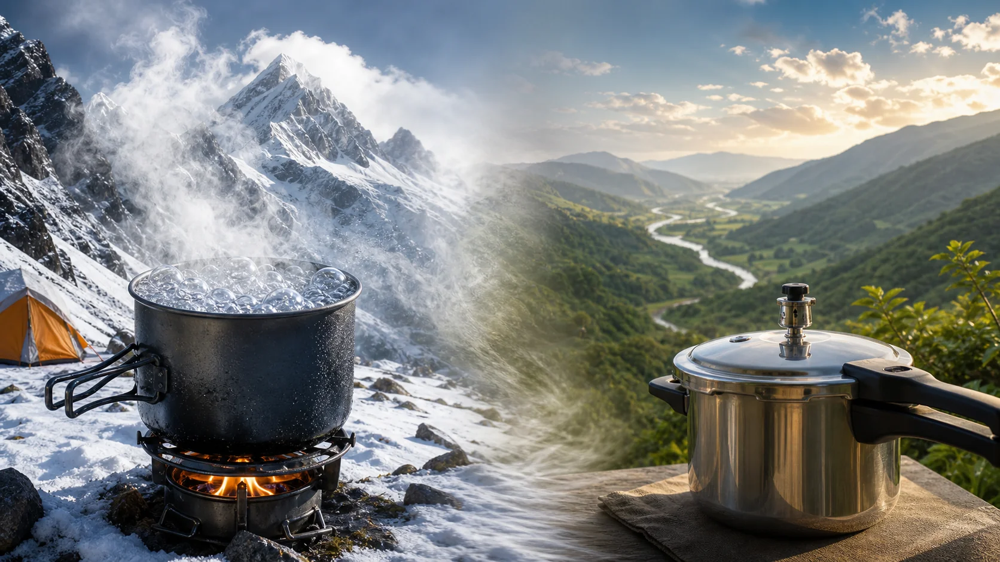
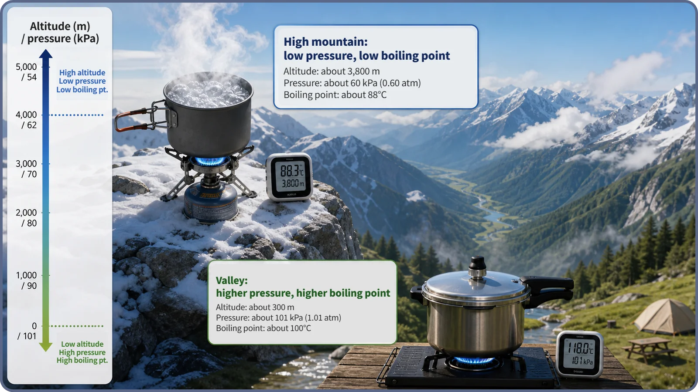
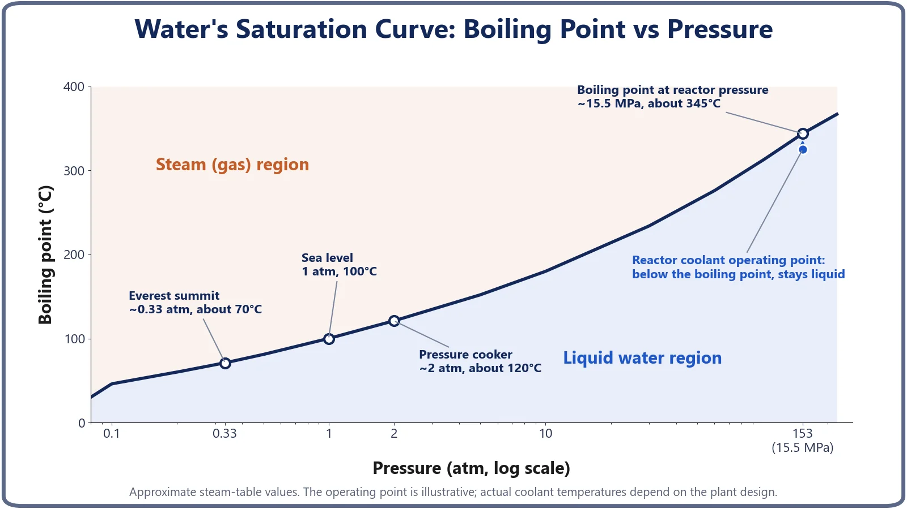

Heat Transfer & Thermal Hydraulics · 139
On a High Mountain, Water Boils Too Soon — Why Pressure Changes the Boiling Point
Boiling starts when vapor pressure matches the surrounding pressure, so raising the pressure raises the boiling point, the principle that keeps PWR coolant liquid.

Water's boiling point is not fixed at 100°C: it is the saturation temperature for a given pressure, and it rises when pressure rises. That is why water boils at about 70°C near Everest's summit, at about 120°C inside a pressure cooker, and only at about 345°C at the roughly 15.5 MPa that keeps a pressurized water reactor's coolant liquid.
Why the summit rice stays hard
Climbers swap a well-known story: rice cooked on a high summit comes out half-done. The water boiled hard, the flame wasn't weak, the timing wasn't short, and still the grains stay hard in the middle. Why?
The answer, oddly enough, is that "the water boiled too soon." The key to the puzzle hides in a sentence we all treat as common sense: "Water boils at 100°C." That sentence is only half true. Let's fill in the other half: how pressure changes the boiling point, and what that has to do with reactor coolant.
The hidden condition in "water boils at 100°C"
We learn in school that water boils at 100 degrees Celsius. Strictly, the sentence leaves out a condition: "at 1 atmosphere." The boiling point (more precisely, the saturation temperature) is not a fixed property of a substance; it keeps changing with the pressure the water is under. And the relationship is simple:
When pressure goes up, the boiling point goes up with it; when pressure goes down, the boiling point goes down.
Why? Molecules in a liquid are always tending to escape as vapor, and the hotter the liquid, the stronger that tendency. Expressed as a pressure, that "urge to escape" is the liquid's vapor pressure at that temperature. If something is pressing down on the water (the air, or the pressure inside a pot), bubbles can't grow freely inside the water until the vapor pressure is strong enough to match it. "Boiling" is the moment the water's vapor pressure equals the surrounding pressure, and bubbles start rising freely from all through the liquid.
So under low pressure water boils at a fairly low temperature; under high pressure it must be heated much further first.
Back to the summit: why the rice stays hard
Higher up a mountain, there is less air stacked overhead, so the air pressure is lower. Lower pressure on the water means it doesn't need to reach 100°C; it bubbles away at a much lower temperature. Near the Himalayan summits above 8,000 meters, a commonly quoted approximation is that water boils at around 70°C. (The exact figure varies with weather and location.)
The important part is that once water is boiling, its temperature stops rising. While it boils, water stays pinned near the boiling point for that pressure; any extra heat goes into turning water into steam rather than making it hotter. So on the summit, the highest temperature the water can reach is lower to begin with. With the cooking water bubbling below 90°C, heat can't soak far enough into the grains, and the rice stays underdone. It's not that the flame is weak; the water simply has no way to get any hotter.

Push the pressure up instead: the pressure cooker
What if you raise the pressure on purpose? Exactly the opposite happens, and the proof is sitting in many kitchens: the pressure cooker.
A pressure cooker seals its lid tightly so the steam from boiling water can't escape. The trapped steam builds up and raises the pressure inside above atmospheric. (The safety valve on the lid only keeps that pressure from exceeding a set level; it doesn't create the pressure.) When the inside pressure is roughly one atmosphere above outside, the temperature water needs to boil climbs well past 100°C, to roughly 120°C.
So the water passes 100°C, then 110°C, and keeps heating as a liquid, delivering more heat to the food, faster. The summit pot and the kitchen pressure cooker are the same principle running in opposite directions.
One misunderstanding is worth flagging: "the pressure heats the water hotter." Not quite. Pressure isn't a heat source. All it does is push up the line for "what temperature water boils at." Actually heating the water up to that line is still the job of a separate heat source, like a gas flame.
In numbers: the higher the pressure, the higher the boiling point
Here's the relationship as actual figures:
- Everest-summit level (about 0.33 atm): boiling point about 70°C
- Sea level (1 atm): boiling point 100°C
- Inside a household pressure cooker (about 2 atm): boiling point about 120°C
Plot it and you get one rising curve, the saturation curve, and it keeps going well beyond the 1 to 2 atmospheres of everyday life.

Reactor coolant sits on the same curve
Follow the curve all the way up to reactor pressure. A pressurized water reactor (PWR) uses a component called the pressurizer to raise and hold the pressure of the coolant (water) flowing through the core far above atmospheric, at around 150 atmospheres (about 15.5 megapascals). At that pressure, the temperature water needs to boil rises too, to around 345°C. (About 15.5 MPa is a widely quoted representative design value; the exact figure for a specific plant isn't specified here.)
The coolant's actual operating temperature through the reactor is kept below that boiling point. So even while it picks up a great deal of heat in the core, the coolant circulates as a liquid without boiling. As discussed earlier, reactor thermal-hydraulic design may allow some local nucleate boiling on the fuel surface, but it is laid out to avoid the coolant as a whole boiling on a large scale, and raising the pressure to push the boiling point well above the operating temperature is the physical basis for that strategy. A pressure cooker raises the boiling point to cook faster; a reactor raises it so the coolant reliably stays liquid. Same principle, different purpose. Why does a reactor choose such a high pressure in particular? That's a question for another day.
Common mix-ups
Raising pressure vs raising temperature. Raising the pressure in a pressure cooker or a reactor doesn't by itself heat the water. Pressure only moves the "boils at what temperature" line; a separate heat source still does the heating.
A higher boiling point vs never boiling. Raising the pressure doesn't make water unable to boil. It just needs a higher temperature, and once it gets there, it boils however high the pressure. Keep heating a pressure cooker and it eventually boils at the pressure set by its valve.
Cold mountaintops vs low boiling points. A summit being cold and water boiling at a low temperature are both linked to altitude, but they're different stories. This article covers the second: lower air pressure means a lower boiling point.
The short version
- Water's boiling point (saturation temperature) is not fixed; it changes with pressure, rising as pressure rises.
- On high mountains the air pressure is low, so water boils at a lower temperature, the highest temperature it can reach drops, and rice comes out underdone.
- A pressure cooker raises its inside pressure to push the boiling point well above 100°C (about 120°C), so water stays liquid at a hotter state.
- Pressure itself is not a heat source; it only moves the boiling threshold, while a separate heat source does the heating.
- A pressurized water reactor uses the same principle, holding coolant pressure far above atmospheric so the coolant stays liquid at its operating temperature.